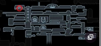
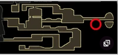
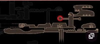
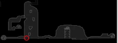

| Name | Notches | Location | Description | Image |
|---|---|---|---|---|
| wayward compass | 1 | Dirtmouth; purchase from iselda | shows current location on map | |
| garthering swarm | 1 | dirthmouth; purchased from sly | increase geo collection range | |
| stalwart shell | 2 | dirthmouth; purchased from sly | longer invincibility after dmg | |
| soul catcher | 2 | ancestral mound; kill elder baldur | increase soul gain from nail strikes | |
| shaman stone | 3 | forgotten crossroads; salubra | increase spell dmg | |
| soul eater | 4 | resting grounds; desolate dive req'd | greatly increase soul gain from nail strikes | |
| dash master | 2 | fungal wastes | shorten dash cd and dash downward | |
| sprint master | 1 | dirthmouth; sly shop | walk faster | |
| grubsong | 1 | forgotten crossroads; grubfather after 10 grubs | Gain soul when taking dmg |  |
| grubberfly's elegy | 3 | forgotten crossroads; grubfather after all grubs freed | when full hp, nail fires beams | |
| fragile heart | 2 | fungal waste; leg eater | inrease hp, breaks when killed | |
| unbreakable heart | 2 | fungal waste; leg eater | increases hp | |
| fragile greed | 2 | fungal waste; leg eater | increase geo when defeating enemies | |
| unbreakable greed | 2 | dirtmouth; divine shop | increase geo when defeating enemies | |
| fragile strength | 3 | dirtmouth; divine shop | increase nail dmg | |
| unbreakable strength | 3 | dirtmouth; divine shop | increase nail dmg | |
| spell twister | 2 | soul sanctum | reduce soul cost of spells | |
| steady body | 1 | forgotten crossroads; salubra | removes recoil from nail strikes | |
| heavy blow | 2 | dirtmouth; sly after shopkeeper's key | knocks enemies further away from nail strikes | |
| quick slash | 3 | kingdom's edge | faster nail slashes | |
| long nail | 2 | dirthmouth; salubra | increase nail atk range | |
| mark of pride | 3 | Mantis village; defeat mantis lords | greatly increase nail range | |
| fury of the fallen | 2 | king's pass; nail bounce | increase dmg when low hp | |
| thorns of agony | 1 | greenpath; mothwing cloak req'd | thorns atk enemies when you take dmg | |
| baldur shell | 2 | howling cliffs | forms shield when healing | |
| fluke nest | 3 | royal waterways | transforms vengeful spirit into volatile baby flukes | |
| defender's crest | 1 | royal waterways; defeat dung defender | causes bearer to emit heroic odour | |
| glowing womb | 2 | forgotten crossroads; crystal heart req'd | passively consumes soul to spawn hatclings | |
| quick focus | 3 | forgotten crossroads; salubra | heal faster | |
| deep focus | 4 | crystal peak; crystal heart req'd | slower heal speed, but heals 2 masks | |
| lifeblood heart | 2 | forgotten crossroads; salubra | gain lifeblood when resting | |
| lifeblood core | 3 | abyss; 15 or more lifeblood masks | gain lifeblood when resting | |
| joni's blessing | 4 | howling cliffs | provides alot of lifeblood but you can't heal using soul | |
| hiveblood | 4 | hive | passivley recover hp over time |  |
| spore shroom | 1 | fungal waste; mantis claw req'd | emit a dmg cloud when focusing soul | |
| sharp shadow | 2 | deepnest; shadow dash req'd | shadow dash now does dmg | |
| shape of unn | 2 | lake of unn; isma's tear req'd | can move while healing | |
| nailmaster's glory | 1 | dirtmouth; sly after defeating 3 nailmasters | charge nail arts faster | |
| weaver song | 2 | weaver's den | summons weaverlings | |
| dream wielder | 1 | resting grounds, seer after 500 essence | charge dream nail faster and collect soul when strinking enemies | |
| dreamshield | 3 | resting grounds | creates shield that follows wearer |  |
| grimm child | 2 | dirtmouth; defeat grimm | spawns pet that collects flames, can atk when fully upgraded | |
| carefree melody | 3 | dirtmouth; banish grimm | protects bearer from dmg | |
| kingsoul | 5 | queen's garden and pale palace | passively generates soul | |
| voidheart | 0 | abyss; kingsoul becomes this | for story purposes; can't be unequipped |  |